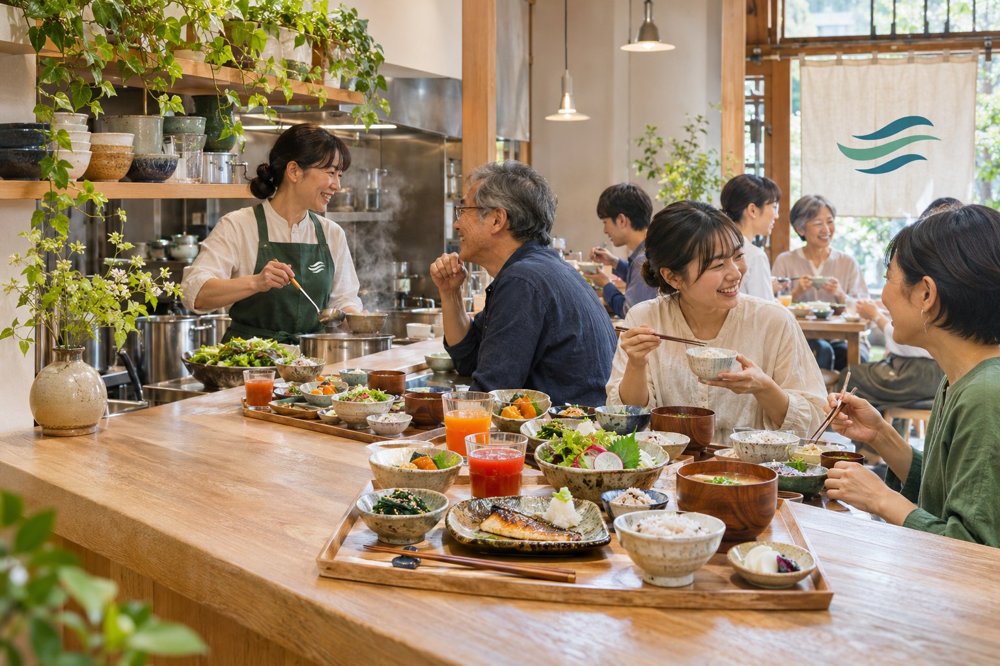
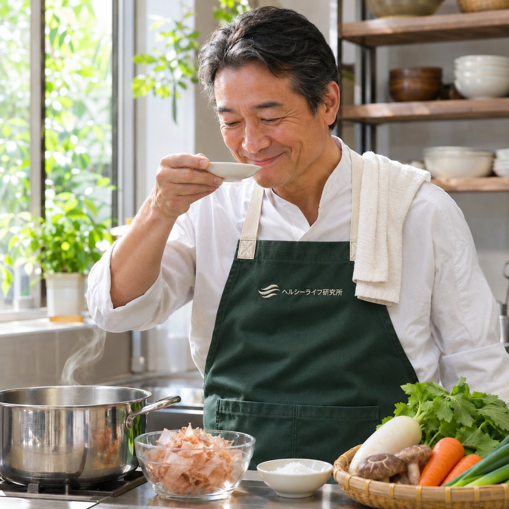

フード＆レストラン事業

「健康は、おいしい。」を、
食卓から。
飲食店業
フード＆レストラン事業は、「健康的な食事はおいしくない」という思い込みをくつがえすことを使命とする、当社の「食」の実践部門です。栄養バランス・素材の質・調理法にこだわった飲食店の企画・運営を通じて、お客様に「食べる健康」を直接体験していただきます。ヘルスケアプロダクト事業で培った栄養学の知見を、そのままメニュー開発と店づくりに活かせることが、当社の飲食店づくりの最大の強みです。
一皿の向こうに、お客様の10年後の健康を見る。
私たちの店づくりの出発点は、「今日のおいしさ」と「明日の健康」を両立させることです。外食は、ともすれば「特別な日の楽しみ」と「健康」を天秤にかけがちです。しかし本来、毎日の食事こそが人の身体をつくります。だからこそ当社の店舗では、管理栄養の視点を取り入れたメニュー設計、化学調味料に頼らない出汁と調味、旬の食材の積極活用、野菜・魚を中心とした献立構成を基本方針としています。
食材調達では、市場や産地との直接のつながりを大切にし、鮮度の高い魚介や、生産者の顔が見える野菜・米・調味料を自らの目で選び抜いています。仕入れの目利きから調理までを一貫して考えられることが、当社の店の味と安心を支えています。
そしてもうひとつ大切にしているのが、「くつろぎ」もまた健康の一部だという考え方です。せかされない時間、心地よい空間、スタッフの温かな接客。心の栄養まで含めて「ヘルシーな外食体験」をデザインすることが、私たちの流儀です。

ご提供メニュー
当事業では、飲食店運営の経験豊富なスタッフと栄養の知見を持つスタッフが連携し、次の業務を展開しています。
プロジェクト事例
- CASE 01
「一汁三菜」を現代風に再構築した定食業態の立ち上げ
忙しい現代人が無理なく栄養バランスを整えられるよう、主菜・副菜・汁物の組み合わせを自由に選べる定食スタイルを開発。幅広い客層にご支持いただいています。
- CASE 02
市場直送鮮魚を主役にした和食店の運営
市場からの直接仕入れにより、仕入れから提供までのリードタイムを最小化。「その日の魚」を書き換える黒板メニューが名物となりました。
- CASE 03
企業向け健康弁当の定期供給
近隣オフィスへの健康弁当の定期配達を実施。栄養成分表示付きの献立が好評をいただいています。
- CASE 04
他社様レストランの健康メニュー監修
既存メニューの栄養バランスを分析し、味を損なわない減塩・野菜増量のリニューアルを監修しました。
ご依頼の流れ
飲食店のメニュー監修・コンサルティングをご希望の場合の流れです。
- Step 1
お問い合わせ
フォームまたはお電話でお気軽にご相談ください。
- Step 2
ヒアリング・現状分析
店舗コンセプト、客層、現行メニュー、食材調達の状況を丁寧にうかがいます。
- Step 3
ご提案
メニュー改善案、食材調達案、オペレーション案と概算費用をご提案します。
- Step 4
試作・試食
実際に試作を行い、味・原価・提供オペレーションを検証します。
- Step 5
導入・スタッフトレーニング
新メニューの導入と、調理・接客スタッフへのトレーニングを実施します。
- Step 6
効果検証・継続改善
売上・お客様の反応を検証し、季節ごとのメニュー改定など継続的に伴走します。
よくあるご質問
Q.健康志向のメニューは原価が高くなりませんか？
旬の食材の活用や調理法の工夫により、原価を抑えながら栄養価と満足度を高めることは十分可能です。当社の店舗運営で実証済みのノウハウをご提供します。
Q.費用はどのくらいかかりますか？
メニュー監修は、既存メニューの栄養分析と改善提案で1店舗あたり10万円程度から、新メニューの開発・試作・スタッフトレーニングまで含めると30万円〜80万円程度が目安です。開業コンサルティングは、コンセプト設計から開業までの伴走で50万円〜150万円程度、開業後の月次サポートは月額3万円程度からご相談を承ります。ケータリング・お弁当は1食あたりの単価制で、内容と数量に応じてお見積りいたします。
Q.個人経営の小さな店でも相談できますか？
もちろんです。店舗の規模を問わず、できることから段階的に取り組めるご提案をいたします。
Q.ケータリングは少人数でも注文できますか？
対応エリア・数量はお問い合わせください。会議用の少人数のお弁当から、イベント向けのまとまった数量までご相談を承ります。
Q.アレルギーへの対応はしていますか？
主要原材料のアレルギー情報を管理し、可能な範囲でメニューのご相談に応じています。詳細は各店舗・担当者にお問い合わせください。
担当者の声
『健康的なのに、こんなにおいしいんですね』という一言が、私たちの最高の褒め言葉です。出汁を丁寧に引く、旬を外さない、素材を生かす。当たり前のことを積み重ねることが、結局いちばんの健康食だと思っています。
常連のお客様の体調やお好みを覚えて、さりげなくメニューをおすすめできるのが、この仕事の醍醐味です。食を通じてお客様の毎日に寄り添える店であり続けたいですね。
採用情報
「健康」を仕事にしたい仲間を募集しています。会社の雰囲気を知りたい方へ、カジュアル面談もご用意しています。
VIEW→ Contactお問い合わせ
サービスに関するご質問やお取引のご相談など、まずはお気軽にお問い合わせください。
CONTACT→